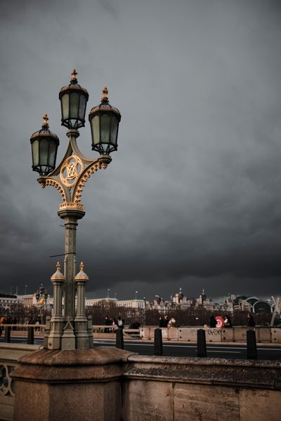
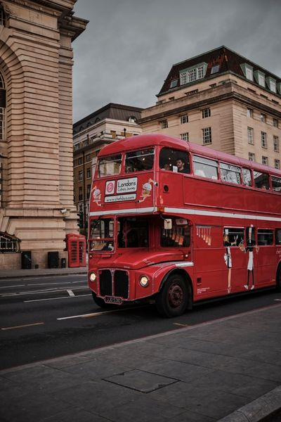
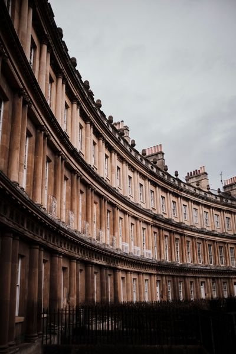

Galerie vlastní tvorby
  

Obec Tečovice
+ 420 777 545 859
2018 — 2021
Ukončeno státní závěrečnou zkouškou z předmětů: základy geologie, pedologie, meteorologie a klimatologie, základy mikrobiologie, chov zvířat a prostředí, pěstování rostlin a prostředí, základy sadovnictví a krajinářství, odpady a jejich využití
BP na téma Obsah léčiv v odpadních vodách (se zaměřením na antibiotika)
2010 — 2014
Ukončeno maturitní zkouškou z chemie, biologie a anglického jazyka
2014 — 2017
2015 — 2017
2018 — 2020
2020 — 2021
2021
2019
Jaro 2022
| Práce s počítačem | Expert |
| Microsoft Office | Pokročilý |
| QGIS | Mírně Pokročilý |
| HTML a CSS | Začátečník |
| Jazyk | Úroveň |
|---|---|
| Agličtina | B2 |
| Němčina | A2 |
| Francouzština | A1 |